0 · Kimi 对标（你喜欢的方向）
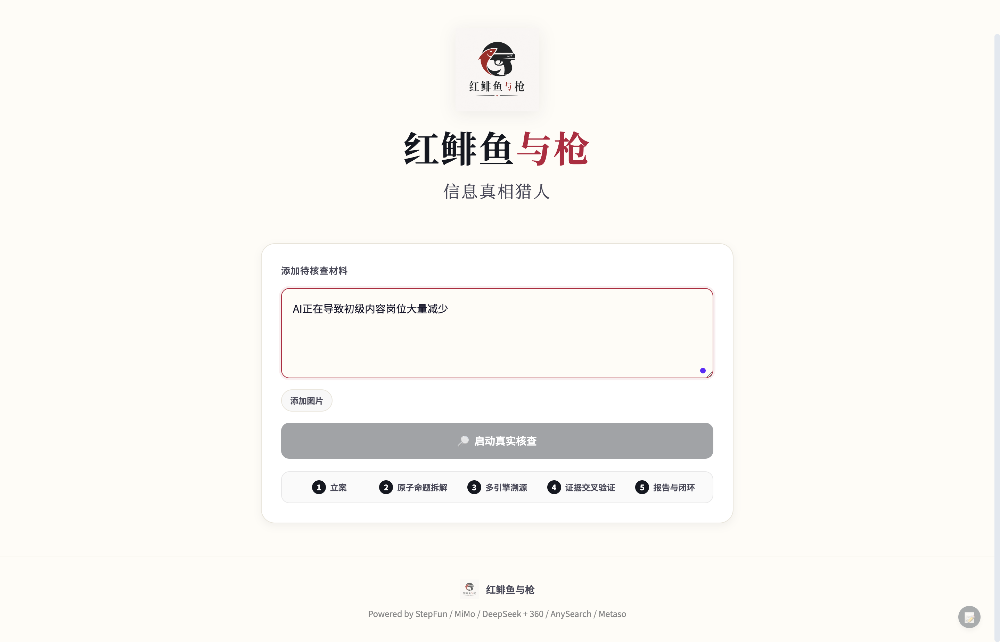
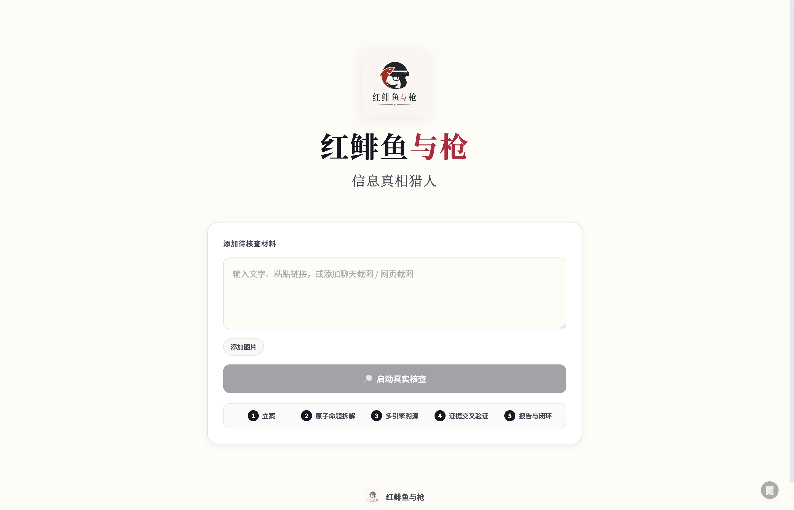
0a · 我们的过程壳（刚做好）

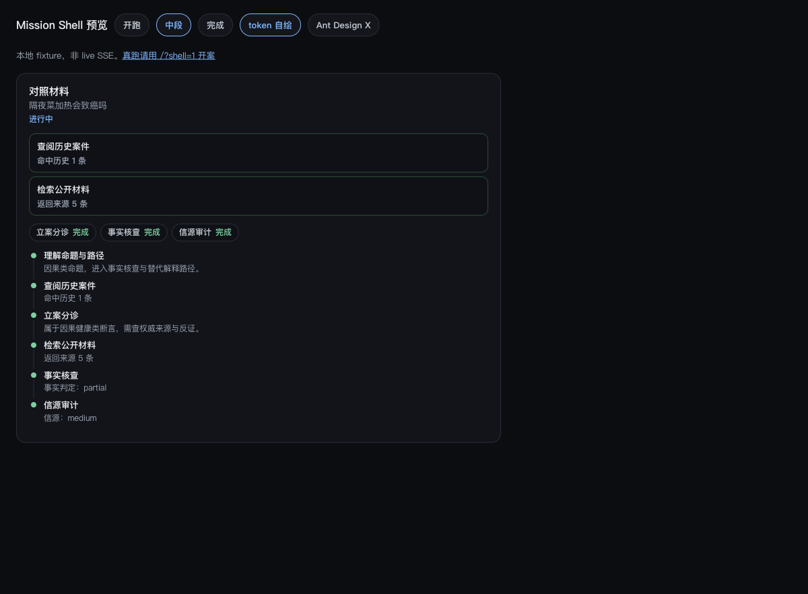
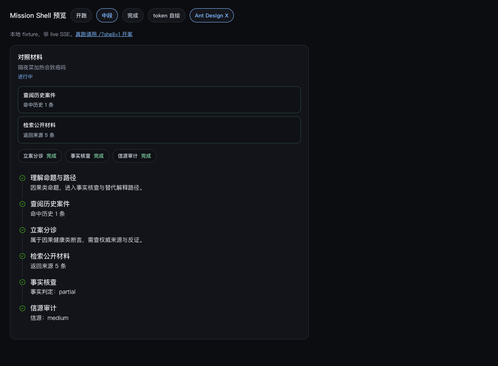
怎么看：这是刚落地的过程壳对照，不是旧 Mission 中段。
选风格时优先拿这三张和 Kimi / Antd X 并排比。
0b · 红鲱鱼现在（自家）
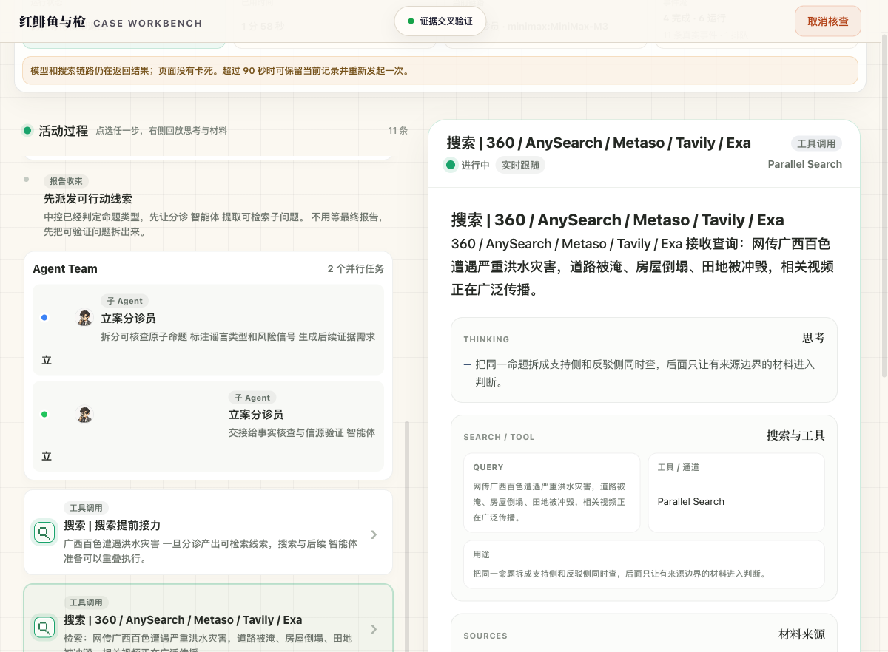
1 · Ant Design X（推荐主选：过程组件）
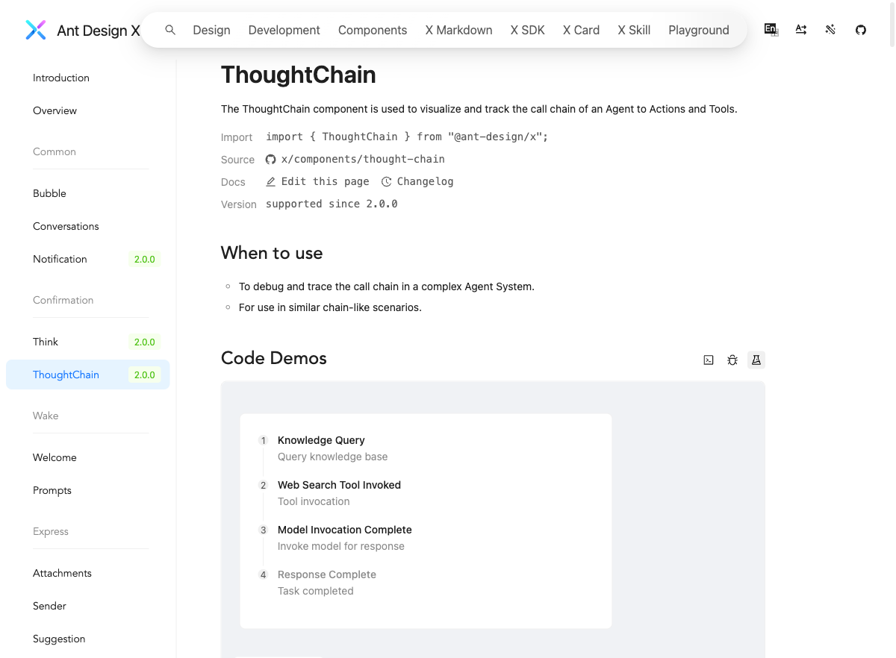
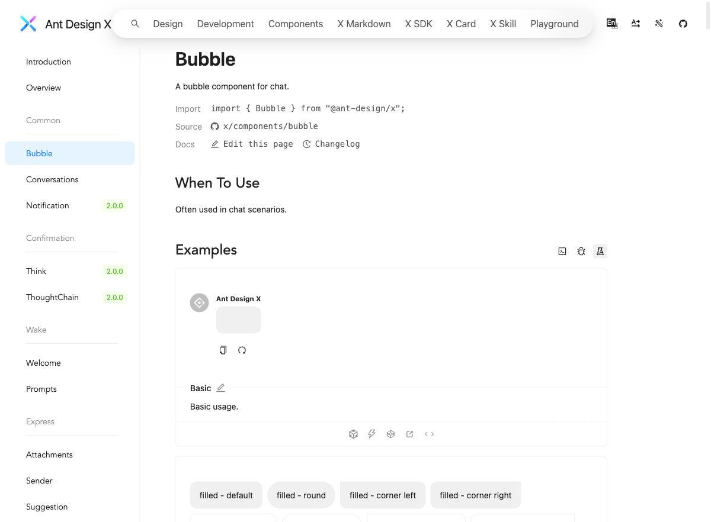
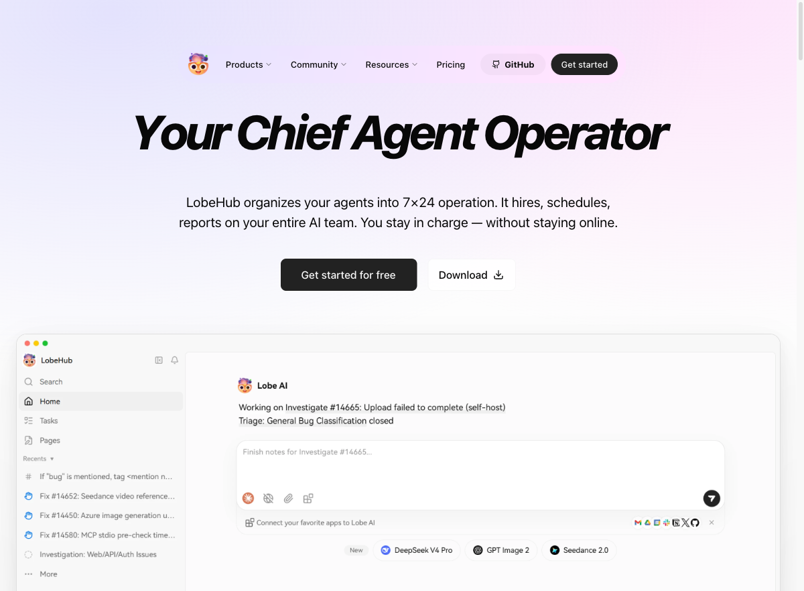
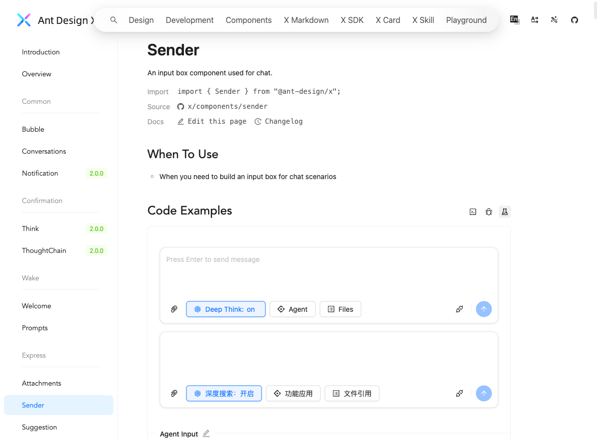
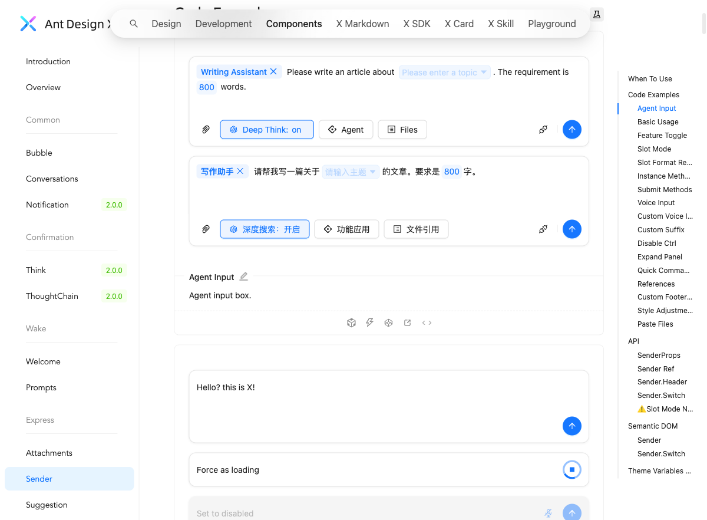
风格一句话：企业级 Ant 蓝 + 清晰文档式 demo；过程组件强，默认皮肤偏「后台/企业 AI」，不是 Kimi 那种消费级克制黑白。
套到红鲱鱼：要重做色板与圆角，主要吃 ThoughtChain / Think / 工具态，而不是整站 Ant 皮肤。
2 · LobeChat / LobeHub（好看，但不适合整仓外壳）

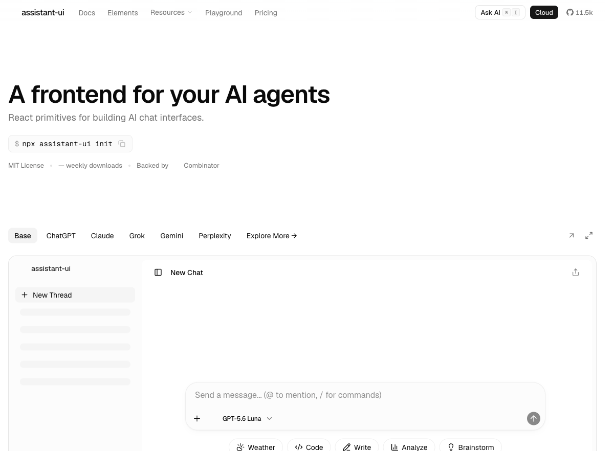
风格一句话：比 Ant 更「产品/消费级漂亮」，侧栏+会话+插件感强。
套到红鲱鱼：整仓 = 换产品；若只学布局，可以，但不要当我们的外壳基座。
3 · assistant-ui（Headless：骨架好，默认脸中性）
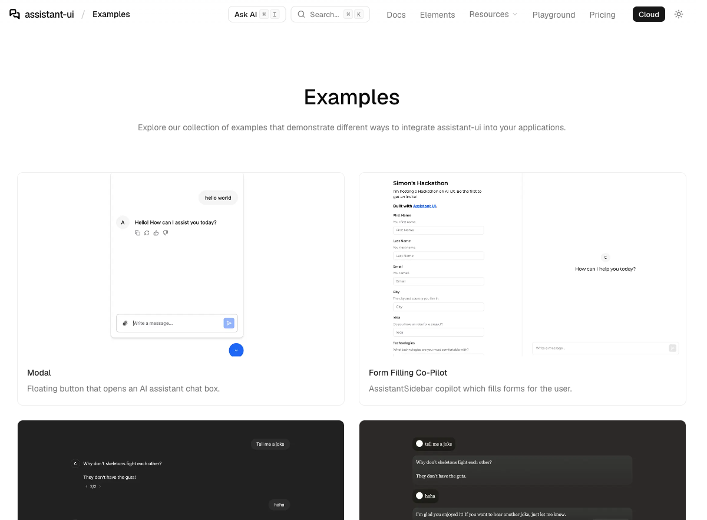
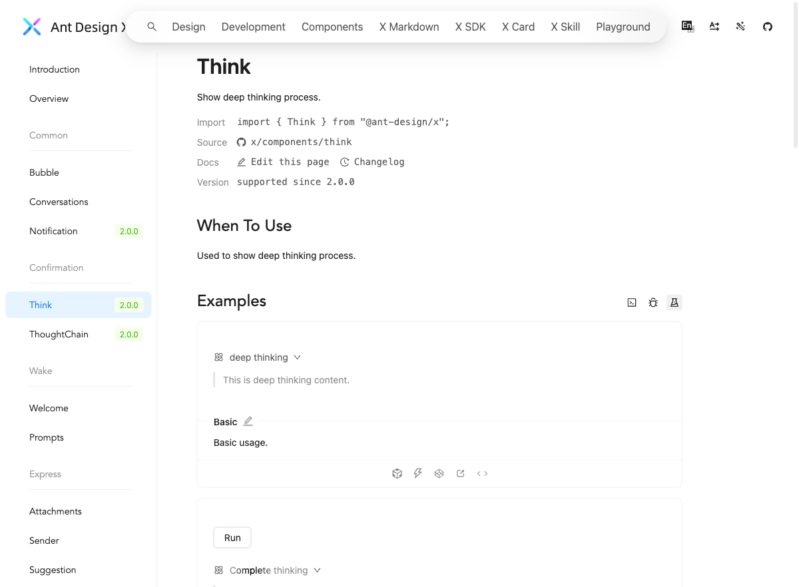
风格一句话：默认「通用 AI Chat」；好看上限取决于你们自己的 CSS。
套到红鲱鱼：适合工具调用内嵌子线程；过程链仍可能要拼 Ant Design X 或自研。
4 · 一眼对照
| 维度 | Kimi（锚） | Ant Design X | Lobe | assistant-ui |
|---|---|---|---|---|
| 第一印象 | 克制、产品级 | 企业文档蓝 | 消费级精致 | 中性 ChatGPT 感 |
| 过程/Agent 工作展示 | 强（集群+动作） | 强（ThoughtChain/Think） | 强（完整应用） | 中强（tool nested） |
| 接进 Vite 核查产品 | — | 容易（组件） | 很难（整应用） | 中等（原语+自绘） |
| 默认皮肤是否像卷宗 | 较接近 | 偏远，要改 token | 偏聊天产品 | 偏聊天产品 |
| 推荐用法 | 审美参照 | 过程层组件 | 只参考布局 | 第二阶段可选 |
5 · 你怎么回我
看完图后，回下面任意一句即可：
- A：就 Ant Design X 过程层，色板我们自己控（开工 Phase 0）
- B：更喜欢 Lobe 那种消费级深色，但只学布局、不 fork（Phase 0 仍用 X 组件 + Lobe 审美 token）
- C：更想 assistant-ui 当聊天原语
- D：这些默认脸我都不喜欢，继续纯自研，只把 Kimi IA 做实
open .../shell-style-gallery/index.html